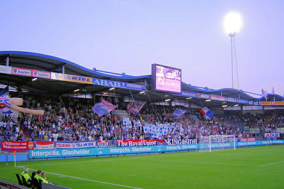
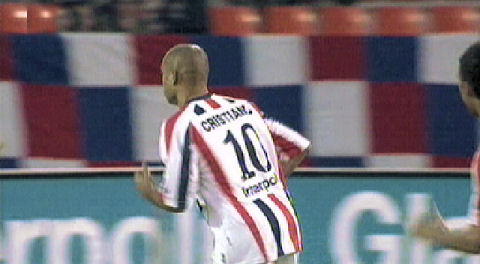
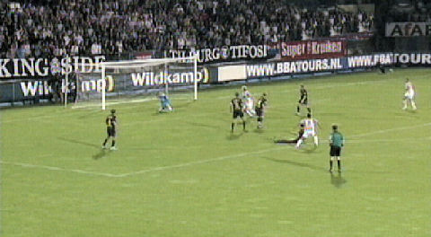

|
Willem II - Roda JC (1-0) 22 september 2007
|

Het uitvak stroomde pas laat vol. Tip voor de NSC: neem volgende keer een
spandoek mee met daarop een "C" en hang het op de juiste plaats over het
reclamebord.

De naam Stilburg is al een paar seizoenen geleden bij het grofvuil gezet. Er
heerste
van meet af aan een bombensjtimmung in het stadion. Op oost veel vlagvertoon...
Mega-spandoek op west.
Hadouir de vleugelspeler die van Willem II naar Roda verkaste.

Bij Willem zien we juist een oud-Roda-speler: Cristiano.
Goed verdedigend werk van De Jong op Poepon die een mooie schietkans krijgt uit
een counter.
Saeijs maakt de Belgische scheidsrechter Vervecken duidelijk dat hij
door
Swinkels is vastgehouden in scoringspositie uit een hoekschop van Hadouir.
Het duurt ruim 40 minuten eer Hadouir zich door het gefluit van zijn oude
publiek
laat intimideren. Hij maakt een domme overtreding en krijgt prompt geel.
Hier gaat iemand enorm uithalen...
Kargbo scoort op slag van rust 1-0 met een kanonslag eerste klas.
Volstrekt onhoudbaar voor Castro.
<grinn>
Dé lokale lekkernij. "In elk handje een Broodje Jantje!" Hmmm...

Matondo ontdoet zich heel behendig van zijn bewaker en brengt de bal voor doel.
Daarbij wordt hij onterecht afgefloten omdat de bal over de lijn zou zijn
geweest.
Een afstandssschot van de voor Kah ingevallen Van Kouwen illustreert het
fantasieloze en wanhopige voetbal van Roda JC.
Goede kans voor De Fauw maar Aerts redt.

Castro keert in een uitstekende reflex met zijn voet een schot van Boutahar.
In een kansloos slotoffensief komt Castro zelfs mee naar voren.
Voldoende stof tot nadenken na deze nederlaag die niet had mogen gebeuren...
© Koempels Pleasure Dome
|